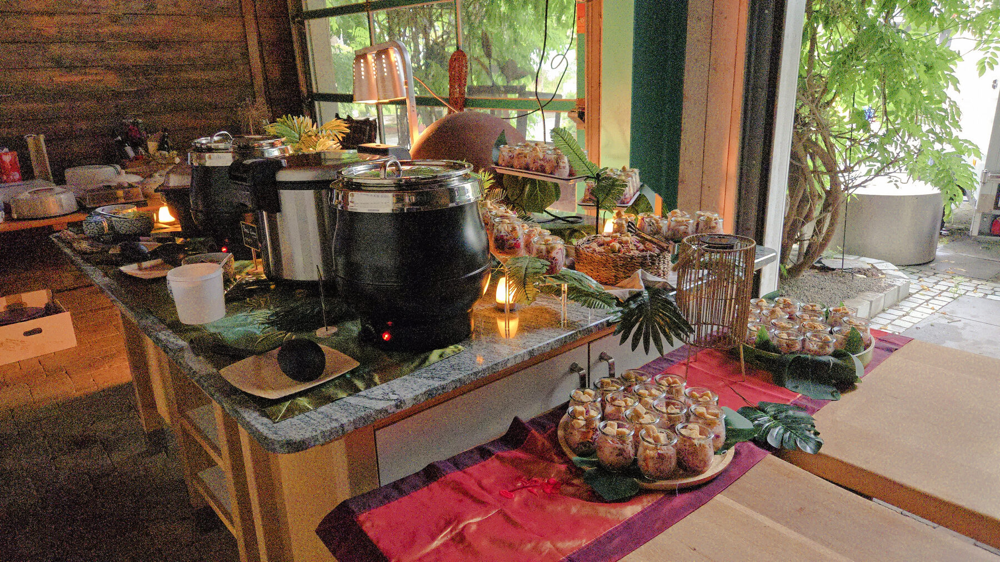
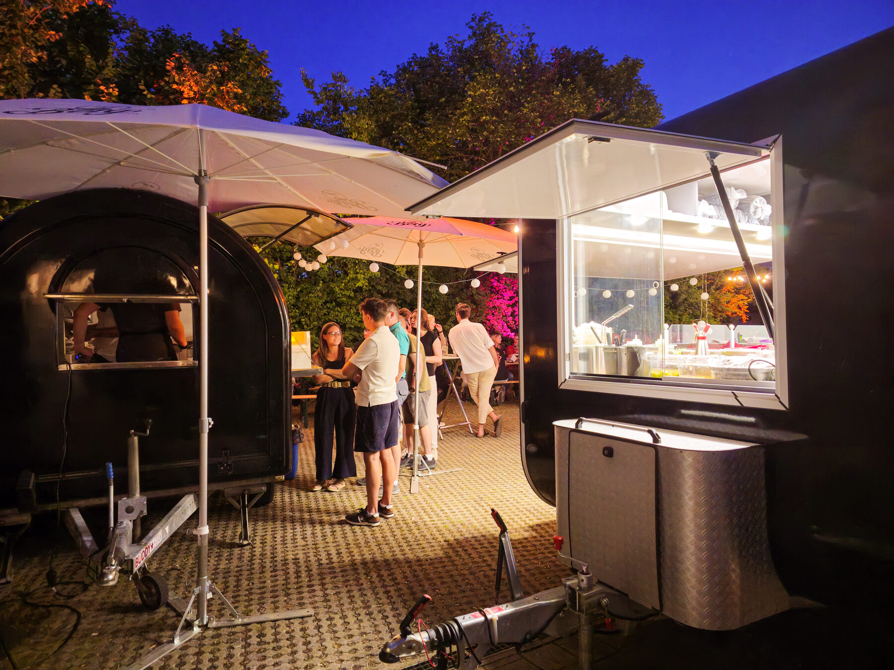
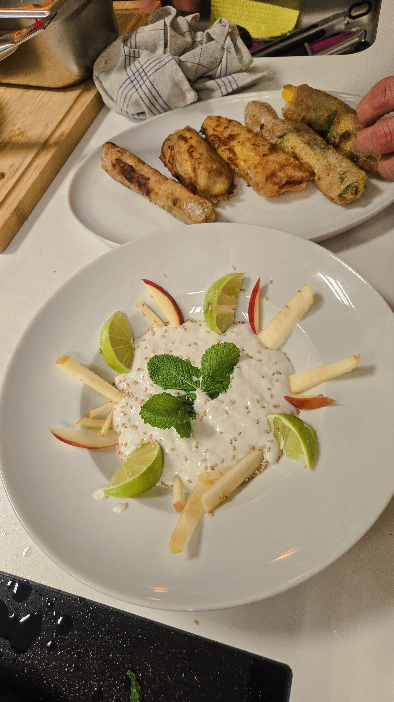

Firmenevents, Hochzeiten und private Feiern – frisch gekocht, individuell geplant, mit Liebe zum Detail serviert. Für Anlässe, die in Erinnerung bleiben sollen.
Frisch am Truck gekocht — immer mit mindestens einem veganen Gericht und einem Gericht ohne glutenhaltige Zutaten.
Seit Sommer 2022 bringen wir unsere asiatische Küche zu Firmenfeiern, Hochzeiten und privaten Anlässen in ganz Baden-Württemberg.
Kein Convenience-Food, keine künstlichen Geschmacksverstärker – von Hand zubereitet, vegan & glutenfrei möglich.
Von der ersten Anfrage bis zum Abbau begleiten wir jeden Anlass persönlich und passen uns eurer Gästezahl an.
Firmenfeiern, Hochzeiten, Festivals und private Feste im Umkreis von 150 km um Biberach – zuverlässig begleitet.
Vom Live-Cooking-Truck bis zum stillen Buffet: modernes Asian Catering mit besonderer Präsentation.

Wir haben bereits zahlreiche Firmenfeiern, Hochzeiten, Festivals und private Feste in der Region begleitet – mit Live-Cooking-Truck, Buffet oder exklusivem Menü.
Echte Rückmeldungen von Google – vom Wochenmarkt bis zum Catering.
„Wir haben das super leckere Essen auf dem Markt in Biberach heute entdeckt. Für jedes Gericht gibt es eine vegane Variante, die Portion war wirklich gross und es hat super lecker geschmeckt. Wir kommen auf jeden Fall wieder.“
„Wir hatten Pearl und Felix mit ihrem kleinen Foodtruck für eine Geburtstagsfeier gebucht. Es hat alles hervorragend geklappt von der Kommunikation, zum Service bis zum Essen. Wir hatten von Anfang an ein sehr gutes Verhältnis und einen wirklich tollen Tag!“
„Sehr leckere und optisch ansprechende Gerichte! Felix und Pearl sind auf unsere Wünsche eingegangen und haben uns bei der Party Planung super unterstützt. Ihr beide seid super, macht weiter so!“
Diese Bewertungen stammen aus unserem Google-Unternehmensprofil. Wir erheben sie nicht selbst, sondern geben sie unverändert wieder — die Prüfung, ob eine Bewertung von einem echten Gast stammt, liegt bei Google. Wir wählen nicht aus, welche Bewertungen erscheinen, und lassen keine löschen.
Ein Ausschnitt aus vier Jahren Firmenevents, Hochzeiten und Festivals – von der Live-Cooking-Station bis zum stillen Buffet.
Weihnachtsfeiern, Teamevents, Meetings mit Verpflegung – oder unser Foodtruck live bei eurem Sommerfest. Professionell geplant und unkompliziert abgerechnet.
Firmencatering entdecken →Individuelle Menüs, stimmungsvolles Ambiente und ein Team, das den wichtigsten Tag mit euch plant.
Hochzeitscatering entdecken →Geburtstage, Jubiläen und Feste im kleinen wie großen Kreis – asiatisches Catering, das Gäste zusammenbringt.
Private Feiern entdecken →
In unseren Kochkursen zeigen wir, wie authentische asiatische Gerichte wirklich entstehen. Ob als Geschenk, Freundeskreis-Erlebnis oder Teambuilding-Format für Firmen.